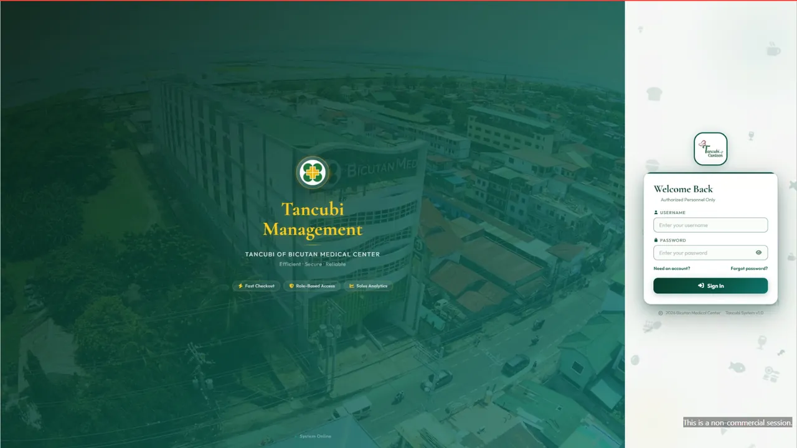
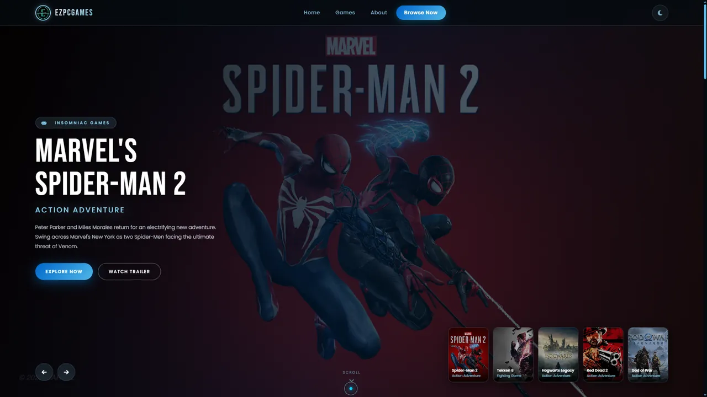
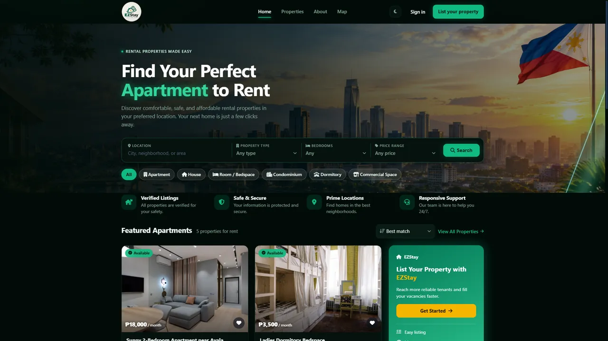
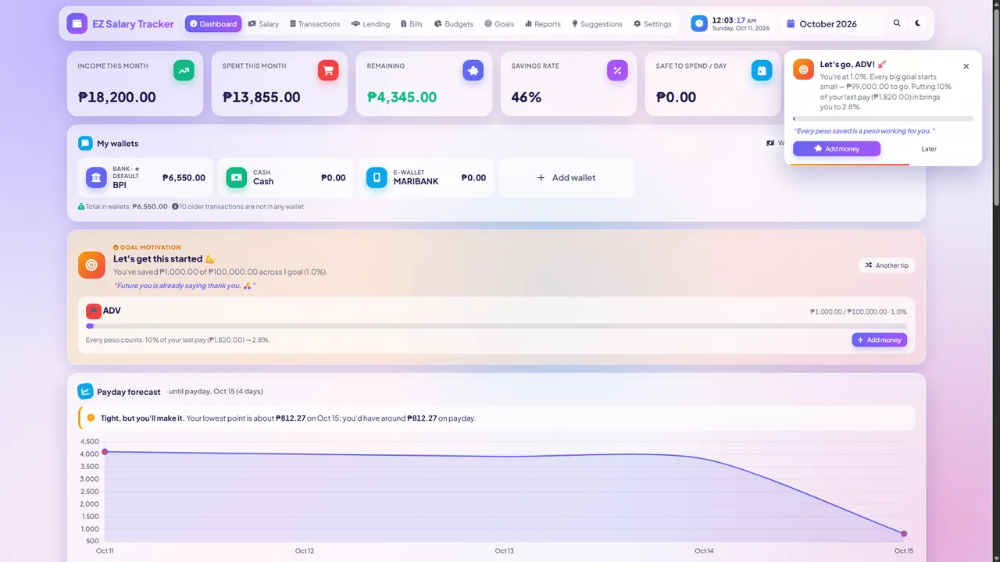
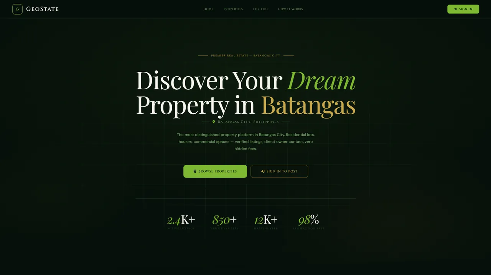
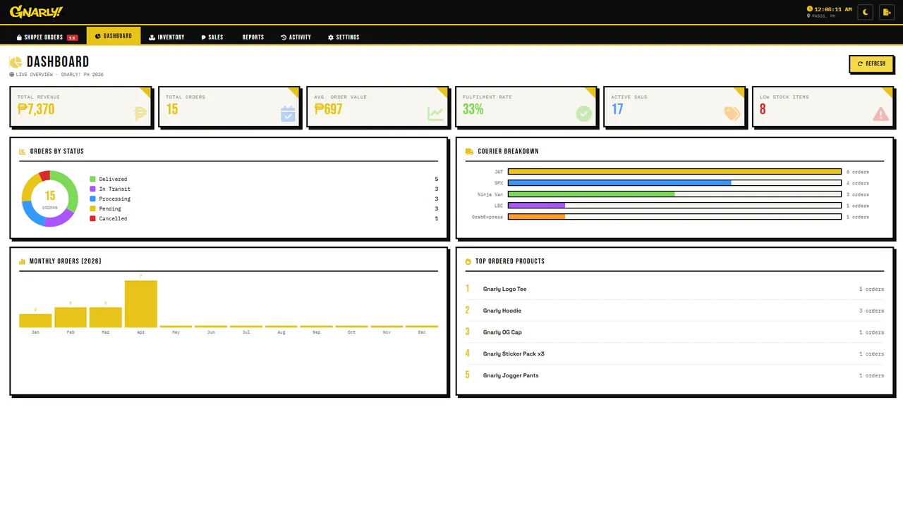
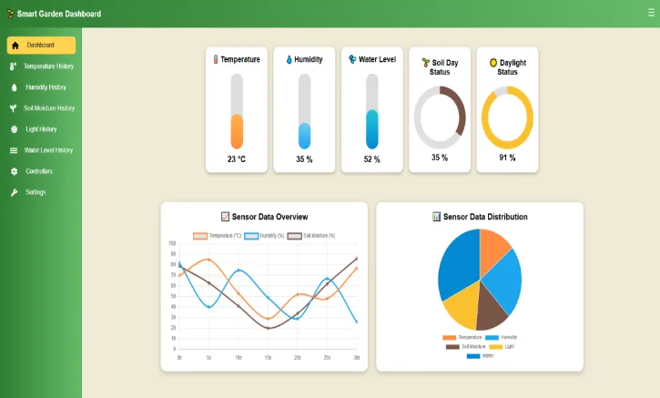
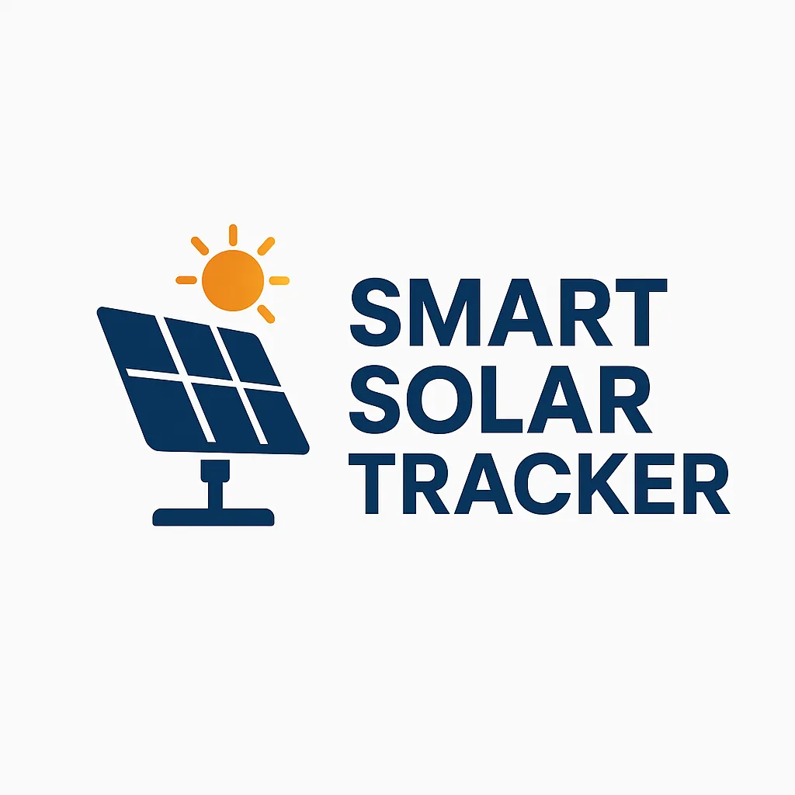

Hi, I'm Ezykiel Lontoc
Full Stack Developer · Networking · IoT & Robotics
Junior IT at Bicutan Medical Center. I build web systems, IoT and robotics projects, and use AI-assisted coding to ship faster and keep improving my work.
Who I am.
I'm Ezykiel Lontoc, a Junior IT at Bicutan Medical Center, based in Pasig City, Philippines. My work combines networking, hardware and software troubleshooting, and developing internal web systems that support hospital operations — across both front-end and back-end development.
Outside of work, I build web applications and explore IoT and robotics projects, including a smart garden powered by an ESP32 and a dual-axis solar tracker built with an Arduino Uno.
I use AI-assisted development (often called “vibe coding”) to speed up prototyping, explore solutions, review code, and troubleshoot issues. However, using AI doesn't mean I depend on it to do all the work. I continue to learn programming fundamentals, write and understand code, debug problems, test functionality, and improve my ability to develop solutions from scratch. I believe AI is a tool that can enhance a developer's productivity, not a replacement for technical knowledge, critical thinking, or problem-solving skills.
My goal is to keep improving as an IT professional and developer by combining hands-on experience, continuous learning, and responsible use of modern development tools. I don't just aim to make things work; I want to understand how they work and take responsibility for what I build.
Web systems
Full stack apps with HTML, CSS, JavaScript, PHP and databases.
Networking & IT support
Troubleshooting and keeping hospital systems running.
IoT & robotics
ESP32 and Arduino projects, from wiring to dashboard.
AI-assisted dev
Faster prototypes, better reviews, same ownership.
Works.

Tancubi Canteen — POS Web System
Complete point-of-sale web system for Tancubi Canteen. Real-time order management, inventory tracking, cashier dashboard, and sales reports — built with HTML, CSS, JavaScript, PHP and MySQL.

EZPCGames — Online Shopping
Online shopping platform for PC games and accessories. Features product catalog, cart, checkout, order management, and admin dashboard — built with HTML, CSS, JavaScript, PHP and MySQL.
Currently Working — Hospital Management System
Internal systems under active development at Bicutan Medical Center. Details and screenshots are confidential.

EZStay — Rental Property Platform
Rental listing platform where renters search by city, type and budget on a map, and landlords post properties for admin approval.

EZ Salary Tracker
Personal finance tracker for wallets, income and expenses, budgets, goals, bills and lending, with reports and a payday forecast.

GeoState — Real Estate Platform
Property platform for Batangas City with buyer, seller, agent and admin roles, featured listings and direct owner contact.

Gnarly — Management System
Store management system for an apparel brand: dashboard, inventory, sales, reports and Shopee order tracking.

Smart Gardening System using ESP32
ESP32 smart garden with a live web dashboard: soil, humidity, temperature, light and water sensors, plus remote pump, light and roof control.

Smart Solar Tracker using Arduino Uno
Dual-axis solar tracker: an Arduino Uno and two servos aim the panel at the brightest light, on a custom 3D-designed mount.
Skills.
I use AI tools for vibe coding — to prototype faster, review my code, debug, and improve my projects. I still read, test and own everything I ship.
Experience.
Let's build
together.
Open to full-time roles, freelance projects and collaboration. Reach out through any of the links below and I'll get back to you.